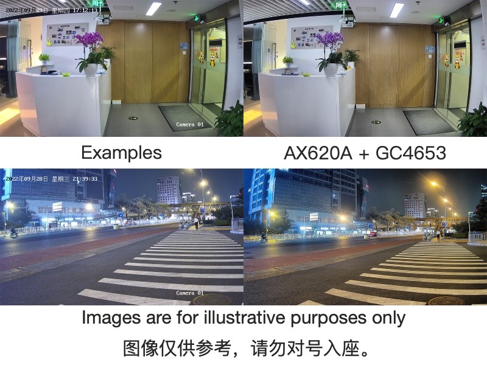

English
EnglishMAIX-III AXera-Pi
Update history
| Date | Version | Author | Update content |
|---|---|---|---|
| 2022-12-08 | v0.1 | wonder |
|
If you think this AI development board are excellent enough and your friends may be interested with this, just share with them this link http://wiki.sipeed.com/en/m3axpi

In the past few years, many Linux AI chips come out.
Raspberry Pi and Jetson Nano these boards are really popular by their good performance, but now MAIX-III AXera-Pi comes out, equipped with the high-performance 3.6TOPs@INT8 chip ax620a, which will be your good choice and provide you a really good experience.

We design a core module for this chip, which is convenient if you want to design the ext-board for yourself.
| MaixIII Core module | |
|---|---|
| CPU | 4 * Cortex-A7, with NEON and FPU |
| NPU | 14.4Tops@int4，3.6Tops@int8 |
| ISP | 4K@30fps |
| Codec format | H.264, H.265 |
| Video encode | 4K@30fps |
| Video decode | 1080P@60fps |
| Ethernet | Support RGMII / RMII Ethernet |
| Display | MIPI DSI 4 Lane，up to 4K@30FPS |
| DRAM | 2GB LPDDR4X 3733Mhz |
| Storge | Optional 16GB EMMC (Boot from TF card by default) |
| IO pins | DDR4 SODIMM 260P route all IO |
Introduction
In WORLD ARTIFICIAL INTELLIGENCE CONFERENCE 2022, this AI board is shown the first time, like what's in the following picture.

And finally we launched this AI development board equipped with AX620A in 20221001. Its official name is MAIX-III AXera-Pi, while we like to call it M3AXPI in the following content.
So, why is this AI development board good?
- Need documents? Follow our guides, to start journey from embedded Linux development to AI model deployment.
- High power consumption? Just use one usb cable connecting with USB3.0 port to boot this device, no need of other power supply.
- Difficult to develop? Compile your own application on this board, or train your own AI model online and deploy it on board.
- Awful camera image? This chip is aimed for AI ISP night vision enhancement, we have adjust the camera to best state.
- Too expensive? This board sold about 100$, cheaper than any other similar board.
Special column Documents
These documents are from Chinese club, read these via browser translator is a good idea.
Official Documents:
MAIX-III AXera-Pi：New generation of 3.6T visual AI board comes out
YOLOv8 object detection：Train and deploy model on Axera-Pi ①
YOLOv8 object detection：Train and deploy model on Axera-Pi ②
MMPose (Extra section) ：Fall Detection and alert on AXera-Pi
Community Documents:
- Axera-Pi unbox experience
- HonestQiao —— unbox Axera-Pi
- Axera-Pi NPU experience
- MMYOLO object detection algorithm on AX620A
- Deploy yolov8 on Axera-Pi
- [m3axpi] YOLOv5 Train and deploy model
- [m3axpi] YOLOv8 Train and deploy model
- Prepare AX620A development enviroment on ubuntu22.04
- Train and deploy yolo5s on Axera-Pi
- [AXPI] Use RNDIS on m1/m2 MAC
- Kaldi - Real-time speech recognition on embedded device
Video reference:
- MAIX-III AXera-Pi unbox and start
- MAIX-III AXera-Pi development deployment
- MAIX-III AXera-Pi model transformer and deploy
- MAIX-III AXera-Pi video inference and push
Camera effect
Night vision enhancement
| Left picture is original, right picture is enhanced | |
|---|---|
 |
|
 |
|
Exhibition darkroom
- The left screen shows the enhanced picture and the righr screen is the original one.

Actual AI effect
AI Ecology
Support many Operators

Screenshots of part operators. Click me to see whole operator support list
Many archived models
Before receiving this board, visit MaixHub to see your interested model, choose Platform axera-pi at the Lower left corner to find model can be deployed on AX-PI
Apart from these, many models are uploaded to github AXERA-TECH/ax-samples, and we also put sme models in sustem image, just burn the system image into SD card and boot it on board to experience these models. Up to now the supported models are as follows:
- Objects Classification
- MobileNetv1
- MobileNetv2
- MobileOne-s0
- ResNet18
- ResNet50
- Others......
- Objects Detection
- PP-YOLOv3
- YOLOv3
- YOLOv3-Tiny
- YOLOv4
- YOLOv4-Tiny
- YOLOv4-Tiny-3l
- YOLOv5s
- YOLOv5-Lite(original model)
- YOLOv7-Tiny
- YOLOv8s
- YOLOX-S
- YOLO-Fastest-XL
- NanoDet
- Human Body Detection
- YOLO-Fastest-Body
- Human Face Detection
- Human Face Segmentation
- Face_Parsing
- Obstacles Detection
- Robot-Obstacle-Detect
- Object detection of Uav view
- Monocular 3D Vehicle Detection
- Human body Key points
- Human body Segmentation
- Semantics Segmentation
- Classic CV
- CropResize
- Pipeline example
- NV12 -> CropResize -> NN(Classification)
Visit Deploy models to AX-Pi (Maix-III(M3) series) board to deploy models to AX-Pi.
Tranning your models
Tranning model online
Now MaixHub has been upgraded, with more friendly interface and more functions, here are steps to training model online.

Share your model
There is a model and codes or programs to load your model after you finish training, you can share these on Maixhub to others. Let's have fun and build the model Community together.

Cases
Updated in 20221205
Linux development
Run debian
We provide a linux image based on debian11, and you can boot this board from SD card after you burn the system image into SD card. We aim to make it easiler for user to use. Besides, it's really conveient to program AI development with Python API.
Burning image: WIKI AXera-Pi Burn image
Basic usage：WIKI AXera-Pi guide
Program with Python：ax_pipeline_api
Development Note：[maixpy3 axpi] How to port debian11 to ax620a (中文)
Development Note：[maixpy3 axpi] Edit and pack the compiled debian image (中文)
BSP SDK
We provide source code, api documents, sdk usages, visit sdk usage to get more.
ax-sample
Here are typical AI models provided by Axera for development, evaluation and verification, those who are good at AI development or want to test these models can have a try, and these are not involved with peripherals.
libmaix
A unified embedded development environment come by SIPEED, includes camera, screen, vision, image processing and pipelines-related deployment examples, is suitable for those who want to learn embedded Linux.
axpi_bsp_sdk
BSP development package for business, provided by Axera. It's the original development package for this chip, containing components like uboot、linux、msp 、sample、rtsp、ipcdemo, and this is progressively open source, you can get these codes for commercial evaluation, such as ipcdemo, but normally these codes are complex and highly coupled, those who are experienced enough and want to use this board for business cooperation can try this.
ax-pipeline
AX-Pipeline is provided by Axera. With M3AXPI, this project is used for people to know the usages of ISP, image processing, NPU, codec and display, which is convenient for developers to quickly evaluate and develop their own multimedia applications.
- Quick compilation Simple cross-platform compilation via cmake.
- How to replace into my own trained yolov5 model
- How to deploy my other models
- How to adjust the image orientation
- ModelZoo descriptions for models which are supported or to be supported
Hardware

Hardware function diagram

Core module parameters
| MaixIII Core module | |
|---|---|
| CPU | 4 * Cortex-A7, with NEON and FPU |
| NPU | 14.4Tops@int4，3.6Tops@int8 |
| ISP | 4K@30fps |
| Codec format | H.264, H.265 |
| Video encode | 4K@30fps |
| Video decode | 1080P@60fps |
| Ethernet | Support RGMII / RMII Ethernet |
| Display | MIPI DSI 4 Lane |
| RAM | 2GB LPDDR4X 3733Mhz |
| Storge | Optional 16GB EMMC (Boot from TF card by default) |
| IO pins | DDR4 SODIMM 260P route all IO |
Ext-board parameters
| Ext-board | |
|---|---|
| Camera | Maixmum supported 3 cameras (Default connecting one camera): 1 MIPI 4-LANE + 2 MIPI 2-LANE |
| Display | Maixmum supported 4-LANE MIPI DSI |
| SD card slot | Default boot from SD card |
| Recording | 2 onboard MEMS MIC support dual MIC noise reduction |
| Audio output | Support 3.5MM interface, used for stereo output or MIC input |
| Network | Support Gigabit Ethernet (ETH) and 2.4GHZ WI-FI |
| USB | 1 x USB2.0HS used for OTG or HOST 1 x USB-UART |
| Others | 1 User key， 3 x System keys， 1 x RTC， 2 x LEDs |
| Interface | Reserved CJTAG，used for connecting corresponding debugger， 2 x 12 pin headers， 4 x M2.5 screw positioning holes |
Camera comparison
- Low-end camera gc4653 400w basic experience

- High-end camera os04a10 400w enhanced night vision edition

Others
- Online AI: https://maixhub.com
- Documents: https://wiki.sipeed.com
- Telegram: https://t.me/sipeed
- Github: https://github.com/sipeed
Visit Maix-III AXera-Pi (FAQ) if you have any trouble.